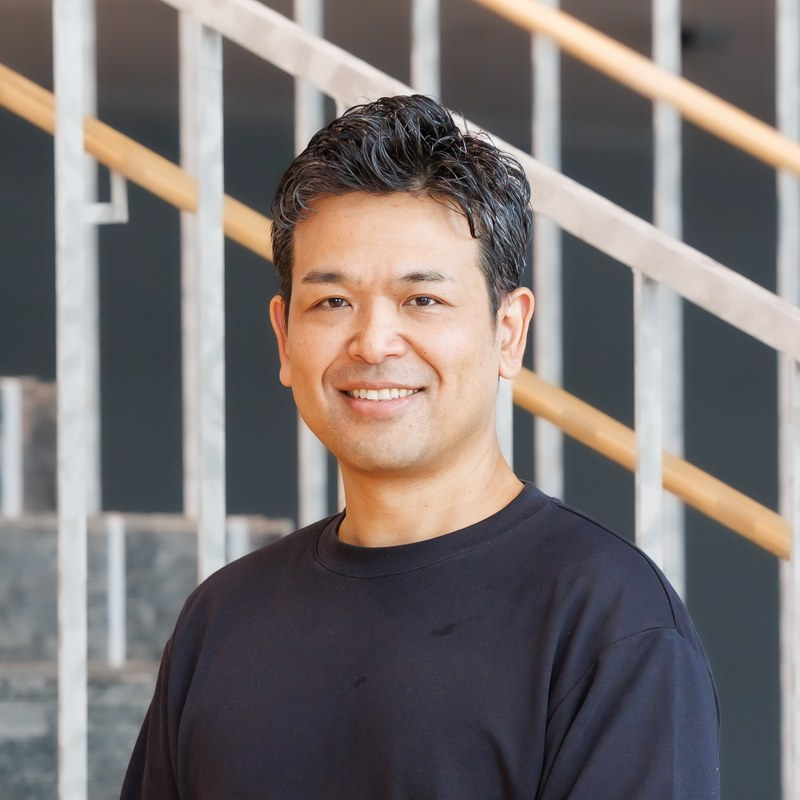

フィンテック × ソーシャルビジネスの最前線を学ぶ。
― 社会性も、経済性も。どちらも諦めないキャリアへ。―
"社会を変える人"を、支える仕組みをつくる。
寄付を取り巻く"仕組み"は、どうすれば変えられるのか?
社会性と経済性を両立させる仕組みづくりに挑むコングラントのCEOが登壇する、超実践型ワークショップです。
※ 定員に達し次第、受付を終了します
Program
本プログラムでは、社会課題解決の最前線で活躍するNPO・ソーシャルセクターをITの力で支えるコングラントのCEOが、コングラントの社会課題解決とビジネスを直接語ります。
「本当に社会貢献とビジネスは両立できるの?」
「日本のNPOや寄付って、実際どうなの?」
「どのように社会の役に立てるの?」
――そんな疑問に、具体的な事例を交えながらお答えします。
講演後は、クラウドファンディングのタイトル・キャッチコピーを考えるワークショップを実施。参加者同士でアイデアを出し合い、一番共感できるコピーを選び出すことで、人の心を動かすPR・広報スキルのヒントを掴んでいただきます。
ソーシャルビジネスのリアルな仕組みと広報戦略を実践を通して学び、社会性 × ビジネススキルを、いま自分のキャリアに取り入れるチャンス。コングラントの仕事の一部を体験しながら、将来のキャリアについて一緒に考えてみませんか?
About Congrant
NPO・ソーシャルセクター向けに、寄付募集・決済・支援者管理(CRM)をワンストップで提供するデジタル・ファンドレイジングシステム「コングラント」を展開。認定NPOや公益法人を中心に4,000を超える団体が利用し、累計の寄付流通額は150億円を超えます。まさに"社会を変える人を支えるインフラ"です。
お金を集める仕組みの提供だけでなく、寄付者の体験、NPOの事業環境、寄付にまつわる制度、社会の認識——寄付を取り巻く"仕組み"そのものを変える取り組みを進めています。社会性と経済性を両立させる、その仕組みづくりこそがコングラントのビジネスモデルです。今回のワークショップでは、その一部を実際に学ぶことができます。
「日本に寄付文化がないのではなく、寄付の仕組み(システム)が足りていない」――その課題認識から、いまコングラントは"寄付決済の会社"にとどまらず、NPO・企業・行政・寄付者をつなぐ「社会課題解決の中間支援組織」を目指しています。スマート寄付アプリ「GOJO」の提供、認定NPOカンファレンス「ignite!」の開催、大学・研究機関との共同研究など、事業の伸びがそのまま社会へのインパクトになる構造をつくっています。
| 社名 | コングラント株式会社 |
|---|---|
| 設立 | 2020年5月(リタワークス株式会社のNPO事業をスピンオフして設立) |
| 本社 | 大阪府大阪市 |
| 事業内容 | 寄付DXシステム「コングラント」、スマート寄付アプリ「GOJO」などの開発・運営。認定NPOカンファレンスの開催や制度提言、共同研究などの中間支援も推進 |
| ビジョン | あらゆる困難に寄付が届く世界の実現 |
Speaker

コングラント株式会社 代表取締役CEO
佐藤 正隆 氏
1980年生まれ、岡山県出身。
2008年にWEBサービス・システム開発のリタワークス株式会社を創業。同社NPO事業部の新規事業として寄付決済・寄付DXシステム「コングラント」の提供を開始し、2020年5月にコングラント事業をスピンオフし法人設立、代表取締役に就任。ジェネシア・ベンチャーズ、Sony Innovation Fund、KIBOW社会投資ファンド等からの投資実績。
日経新聞社 FIN/SUM 2026 ファイナルピッチ進出、日経クロストレンド「未来の市場をつくる100社」、Forbes「NEXT IMPACT STARTUPS 30」「FRONTRUNNER」、週刊東洋経済「すごいベンチャー100」、J-Startup KANSAI、インパクトスタートアップ協会 正会員など
Takeaways
寄付を取り巻く"仕組み"そのものを変えていくコングラントの挑戦を、最前線の実例から学べます。
クラウドファンディングのコピーづくりを通して、人の心を動かす施策の考え方を体験します。
あなたのアイデアに、事業をつくってきた経営者から本気のコメントが返ってきます。
For You
Outline
| イベント名 | CEOと学ぶ、社会課題解決とビジネスを両立する仕事のリアル＆ワークショップ 〜フィンテック×ソーシャルビジネスの最前線を学ぶ。社会性も、経済性も。どちらも諦めないキャリアへ。〜 |
|---|---|
| 主催 | コングラント株式会社 × Social Act Career |
| 日時 | 2026年9月8日(火)13:30 – 17:00 |
| 対象 | 大学生(学年不問) |
| 定員 | 15名(先着順) |
| 会場 | 調整中 ※確定次第このページでご案内します。詳細はお申込者にご連絡いたします。 |
| 参加費 | 無料 |
| 服装・持ち物 | 服装自由(私服OK)・手ぶらOK |
| 備考 | 選考とは一切関係ありません。 授業やゼミと重なる場合は、遅刻・途中参加もご相談ください。 |
NPOやソーシャルビジネスに興味がある方、ビジネススキルで社会貢献したい方、
そして、ワクワクするような仕事を探している方のご参加をお待ちしています。
※ 定員に達し次第、受付を終了します